철사 꽃
다시 살리는 일은 언제나 무언가를 섞었다.
이번에는 사람이 아니었다.
이번 화 인물
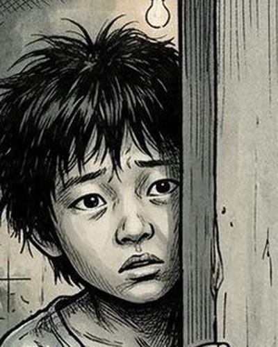
준호정근의 아들. 엄마의 노래를 기억하는 아이, 그리고 기름공장의 젊은 작업자.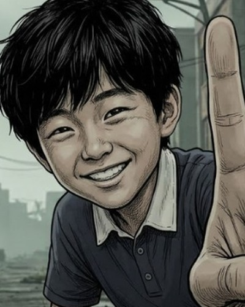
민호언제부턴가 누나보다 어려진, 늘 열한 살인 동생.
지구 · 그 이후
손전등 빛 속, 계단 난간에 한 손이 수갑으로 묶인 채 웅얼거리는 방독면의 남자
아저씨승주야…?
수갑 찬 손이 닿는 곳에 찌그러진 물병을 내려놓는 준호의 손
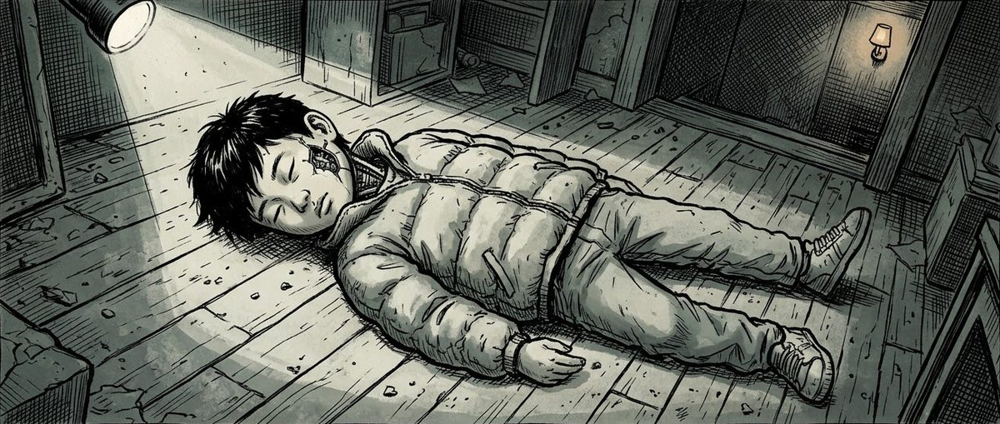
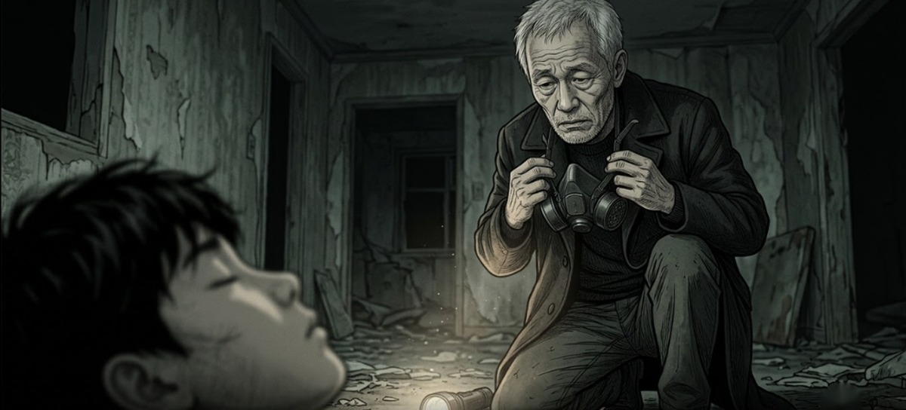
준호 · 적출기를 만든 사람
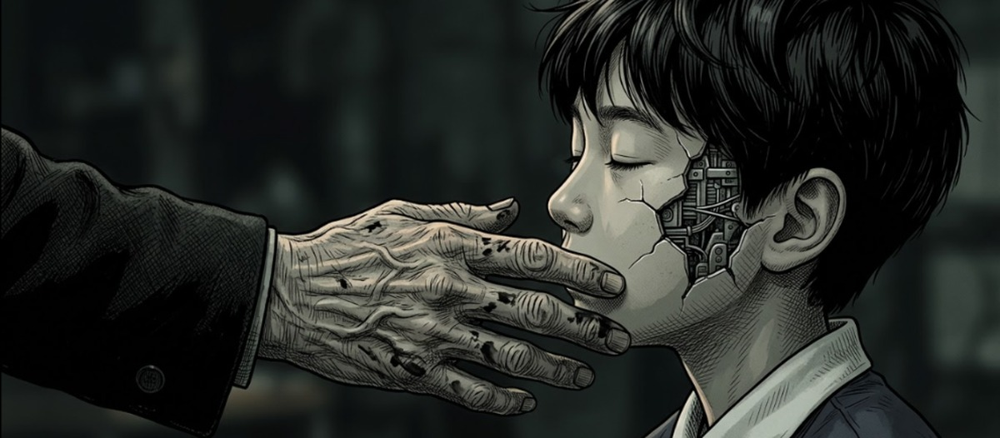
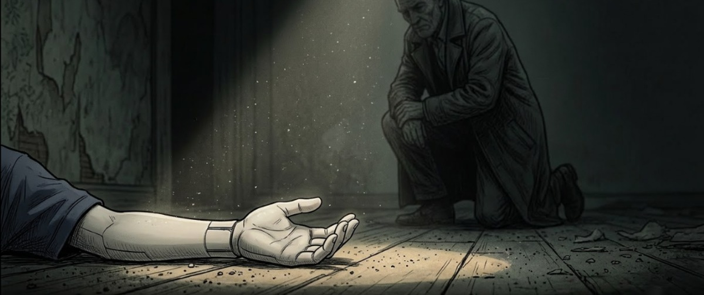
손은 아직, 무언가를 건네던 모양 그대로였다.
로봇을 등에 업고 어두운 2층 계단을 올려다보는 준호
철컥… 철컥…
기름을 찾아 빈집을 뒤지던 준호는 그 2층집에 닿았다.
2층에서 판자 긁는 소리가 났다.
준호는 올라가지 않았다.
준호는 올라가지 않았다.
반지하
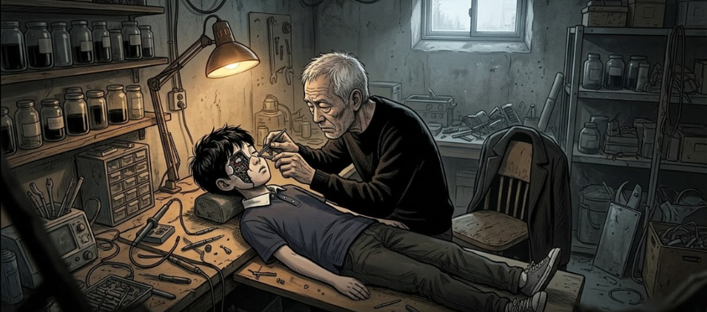
로봇의 가슴 패널 안, 작은 수신기에 따로 납땜된 차단 스위치를 핀셋으로 드는 준호
준호호출기 신호 잡히면…
꺼지게 만들어 놨네.
준호누가 이런 걸.
니퍼로 그 선을 끊는 준호
똑
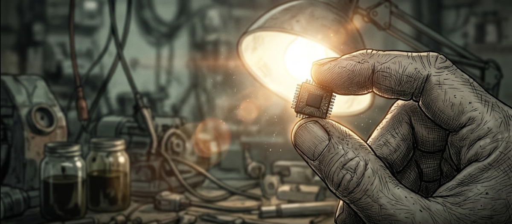
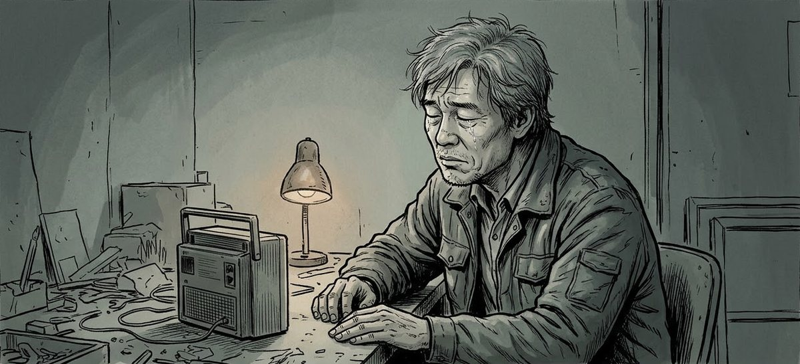
유진아, 엄마야…
음— 음음—
녹음을 들으며 고개를 드는 준호, 난로 옆 빈 의자
어디서 들어 본 노래였다.
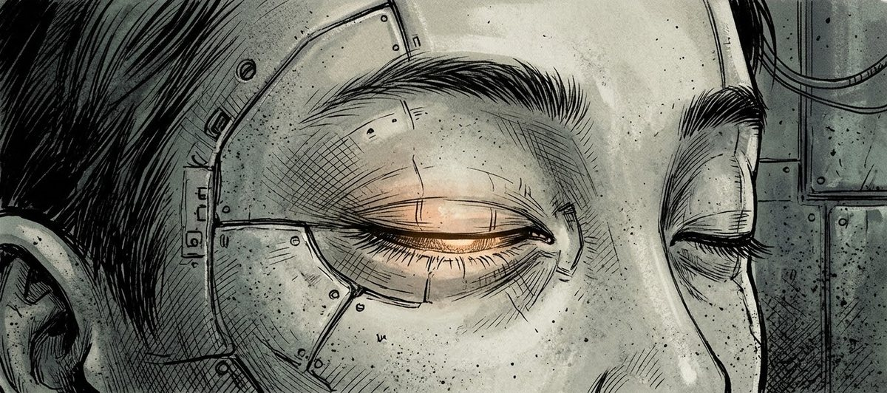
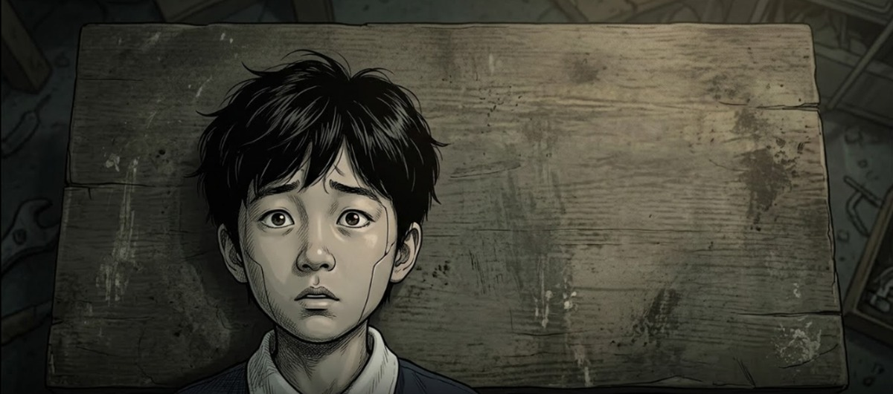
누나는?
작업대에 앉아 빈 손을 내려다보는 민호
민호호출기…
누나한테 줬어요.
준호알아.
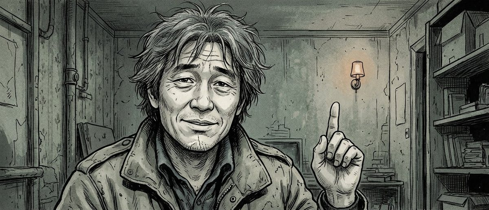
올라갔어.
준호를 똑바로 보며 묻는 민호
민호그럼 저는
왜 다시 켜졌어요?
검은 기름이 담긴 유리병들 앞에 선 준호의 등
준호나도 저 위에
데려올 사람이 있어.
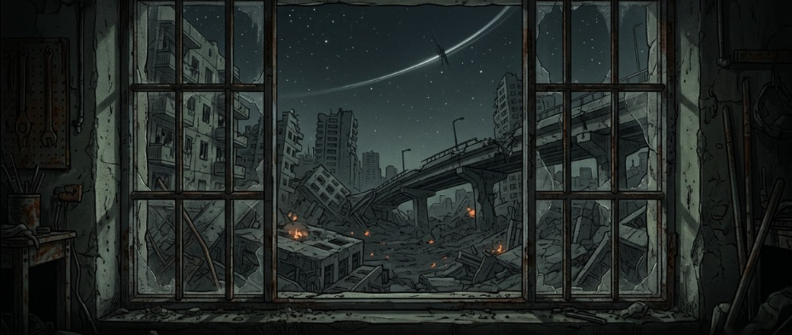
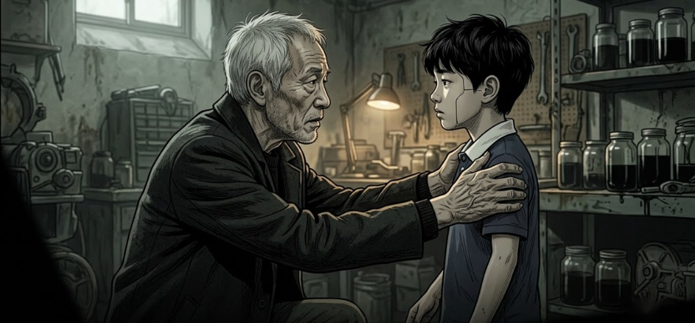
임무, 하나 더 줄게.
…뭔데요?
작업대 구리선으로 새 철사 꽃을 꼬는 민호의 손
민호누나 거
새로 만들어 가야지.
데리러 가자.
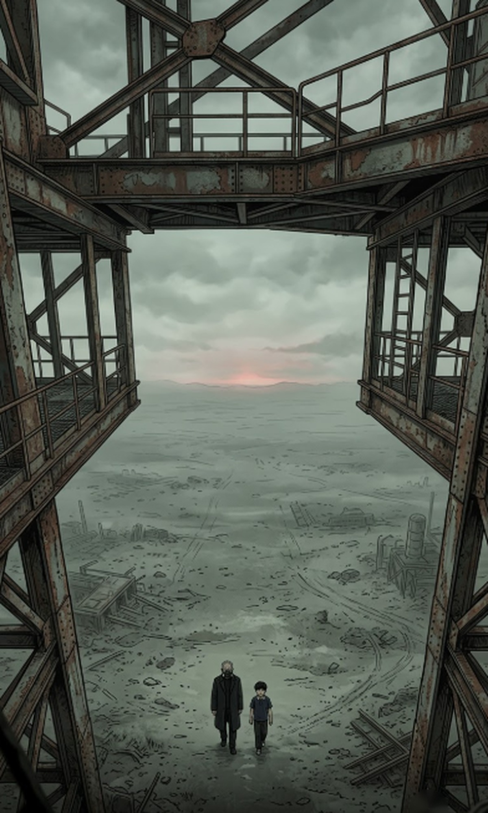
녹슨 발사탑 아래 모닥불과 횃불을 피운 방독면 무리, 가죽 재킷의 두목
발사탑 아래에는 먼저 온 자들이 있었다.
같은 시각, 하늘 위에서
유진은 아직 아무것도 몰랐다.
유진은 아직 아무것도 몰랐다.